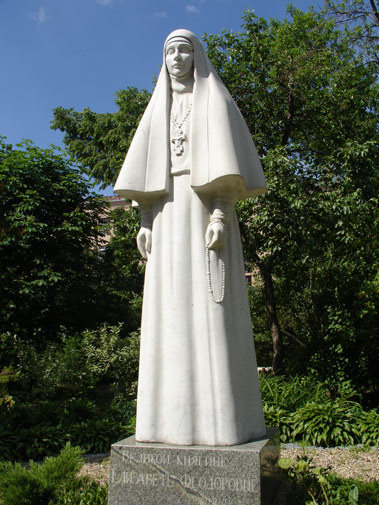
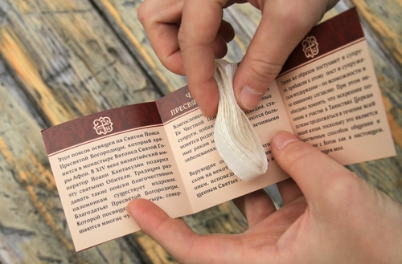
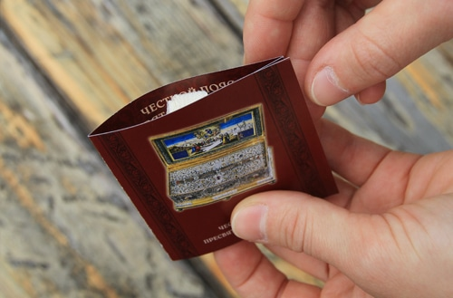
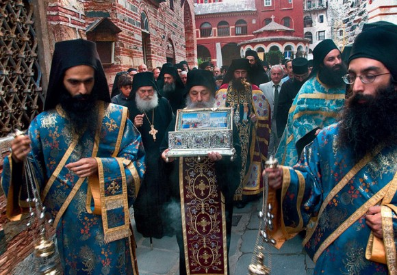
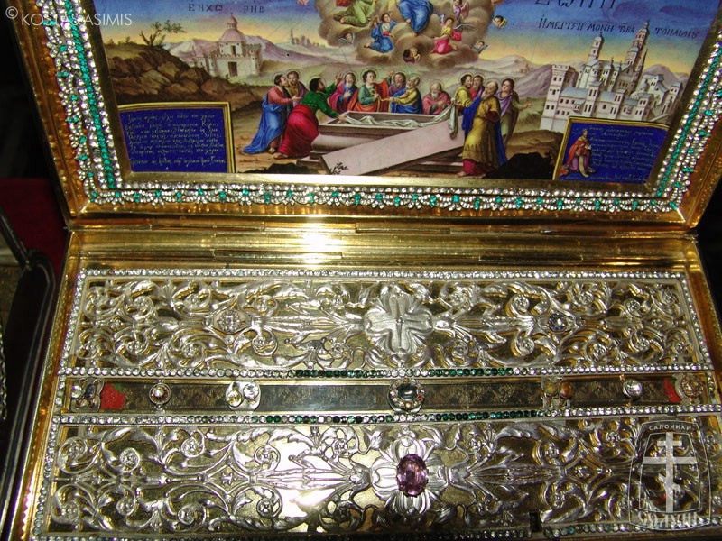

30 11 2011 (1991 день 20 часов назад)

Сегодня в Марфо-Мариинской обители в Москве
при содействии фонда св.Апостола Андрея Первозванного,
сестрами милосердия, было передано в дар Абхазской Православной Церкви
при содействии фонда св.Апостола Андрея Первозванного,
сестрами милосердия, было передано в дар Абхазской Православной Церкви

Пояски пресвятой Богородицы , освящённые в монастыре Ватопед Святой Горы Афон

Как утверждает церковь, эти пояски способны исцелять бесплодие, помогают найти мужа или жену, а также способствуют миру в семьях верующих.

По заявлению митрополита Красноярского и Ачинского Пантелеимона, Пояс Богородицы - наиболее значимая из святынь, когда-либо посещавших наш город. «Вещи Богородицы были бережно сохранены апостолами на века. Одна из вещей Богоматери - её пояс - святыня, которая пережила все нелегкие события Палестины, Византии, Рима и сегодняшних дней. В конечном итоге ,святыня оказалась на полуострове Афон, и теперь этот пояс по решению святых отцов Афона прибывает в Россию», - сообщил владыка.
Он также напомнил паломникам, что пояски являются священными и относиться к ним надо соответственно. «Тот, кто возьмёт поясок на память, должен хранить его очень бережно, иначе малейшая небрежность - и такое будет, что лучше бы не рождаться», - отметил Пантилеимон.

По преданию, чудотворный Пояс Богородица сплела из верблюжьего волоса и носила его вплоть до конца Своего земного пути. Во время Вознесения Она передала пояс апостолу Фоме. Долгое время он хранился в Палестине, затем был перенесен в Константинополь ,в построенный для него Xрам. Сейчас он находится в монастыре Ватопед.
По преданию, чудотворный Пояс Богородица сплела из верблюжьего волоса и носила его вплоть до конца Своего земного пути. Во время Вознесения Она передала пояс апостолу Фоме. Долгое время он хранился в Палестине, затем был перенесен в Константинополь ,в построенный для него Xрам. Сейчас он находится в монастыре Ватопед.